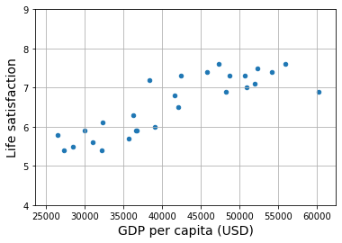

Section 1.1#
This is the third notebook.
|
|
import sys
assert sys.version_info >= (3, 7)
from packaging import version
import sklearn
assert version.parse(sklearn.__version__) >= version.parse("1.0.1")
import matplotlib.pyplot as plt
plt.rc('font', size=12)
plt.rc('axes', labelsize=14, titlesize=14)
plt.rc('legend', fontsize=12)
plt.rc('xtick', labelsize=10)
plt.rc('ytick', labelsize=10)
import numpy as np
np.random.seed(42)
import matplotlib.pyplot as plt
import numpy as np
import pandas as pd
from sklearn.linear_model import LinearRegression
# Download and prepare the data
data_root = "https://github.com/ageron/data/raw/main/"
lifesat = pd.read_csv(data_root + "lifesat/lifesat.csv")
X = lifesat[["GDP per capita (USD)"]].values
y = lifesat[["Life satisfaction"]].values
# Visualize the data
lifesat.plot(kind='scatter', grid=True,
x="GDP per capita (USD)", y="Life satisfaction")
plt.axis([23_500, 62_500, 4, 9])
plt.show()
# Select a linear model
model = LinearRegression()
# Train the model
model.fit(X, y)
# Make a prediction for Cyprus
X_new = [[37_655.2]] # Cyprus' GDP per capita in 2020
print(model.predict(X_new)) # outputs [[6.30165767]]

[[6.30165767]]
# Select a 3-Nearest Neighbors regression model
from sklearn.neighbors import KNeighborsRegressor
model = KNeighborsRegressor(n_neighbors=3)
# Train the model
model.fit(X, y)
# Make a prediction for Cyprus
print(model.predict(X_new)) # outputs [[6.33333333]]
[[6.33333333]]
import wandb
import random
# start a new wandb run to track this script
wandb.init(
# set the wandb project where this run will be logged
project="test-project",
# track hyperparameters and run metadata
config={
"learning_rate": 0.02,
"architecture": "CNN",
"dataset": "CIFAR-100",
"epochs": 10,
}
)
# simulate training
epochs = 10
offset = random.random() / 5
for epoch in range(2, epochs):
acc = 1 - 2 ** -epoch - random.random() / epoch - offset
loss = 2 ** -epoch + random.random() / epoch + offset
# log metrics to wandb
wandb.log({"acc": acc, "loss": loss})
# [optional] finish the wandb run, necessary in notebooks
wandb.finish()
Failed to detect the name of this notebook, you can set it manually with the WANDB_NOTEBOOK_NAME environment variable to enable code saving.
wandb: Currently logged in as: kithminrw (kithminrw-ai). Use `wandb login --relogin` to force relogin
Tracking run with wandb version 0.17.0
Run data is saved locally in
/Users/kithminrw/Documents/GitHub/ml-nn-zero2hero/notebooks/01/wandb/run-20240515_090928-2pcb5zzn View project at https://wandb.ai/kithminrw-ai/test-project
Run history:
| acc | ▁▄▇██▇▇█ |
| loss | █▇▅▁▃▂▁▁ |
Run summary:
| acc | 0.81072 |
| loss | 0.1592 |
View run leafy-valley-3 at: https://wandb.ai/kithminrw-ai/test-project/runs/2pcb5zzn
View project at: https://wandb.ai/kithminrw-ai/test-project
Synced 5 W&B file(s), 0 media file(s), 0 artifact file(s) and 0 other file(s)
View project at: https://wandb.ai/kithminrw-ai/test-project
Synced 5 W&B file(s), 0 media file(s), 0 artifact file(s) and 0 other file(s)
Find logs at:
./wandb/run-20240515_090928-2pcb5zzn/logs